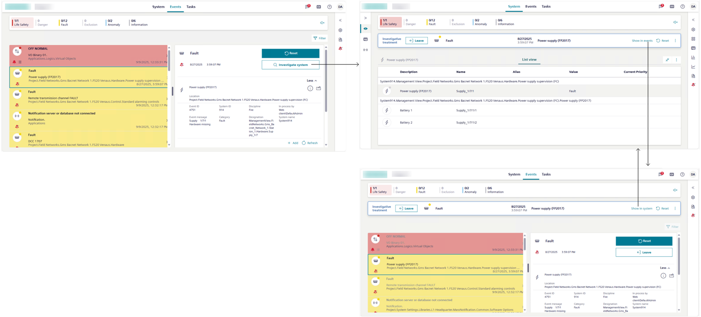

Handling an Event with Investigative Treatment
The investigative treatment lets you send event-handling commands while using system monitoring to inspect the event source. Anyway, you can also switch back to the Events workspace, and continue handling the event from there, without interrupting the investigative treatment currently in progress.

Start Investigative Treatment
- The Events workspace displays on the screen.
- In Event List, select the row of the event that you want to investigate.
- The event is selected, and the entire event row becomes highlighted.
If any other event was previously selected, it is automatically deselected (suspended). - The event details display on the right of the event, including the Investigate system button.
NOTE: If the Assisted treatment button is present you must handle the event with assisted treatment. See Handling an Event with Assisted Treatment. - In the event details, select Investigate system.
- Investigative treatment is initiated for the selected event. The Events workspace switches to the System workspace, which displays system monitoring with the Investigative treatment bar along the top, and the object that caused the event already selected in System Browser.
Inspect and Command the Properties of the Object in Alarm
- If the right panel is collapsed, select to expand it.
- Properties of the object in alarm display here under the Properties section. For instructions, see Properties.
Send Event Handling Commands
Use the buttons in the Investigative treatment bar to send any commands as they become available.
A typical sequence may include:
- Select Acknowledge to recognize receipt of the event.
- This action also causes any audible alarm sound of the field panel to be silenced.
- After you acknowledge an event, select Silence or Unsilence to respectively turn off or on any audible alarm sound from the detection line.
- This means that if a field panel is connected to a detection line with horns, you can silence any horns audible sound in the site or turn it back.
- Select Reset to reset the event.
- For an event that can be manually closed, select Close to clear it from the list.
- If no suggested action is available in the Investigative treatment bar, you can only select to view the list of commands in a popup; text in light gray indicates that those commands are unavailable because they were already issued or they cannot be issued yet.
Note that:
- If you switch back to the Events workspace, you can use the buttons in the event details to send any commands as they become available.
- Additionally, if you customize columns to make the Commands column visible in Event List, you can send event-handling commands also from the event row.
Switch Back to the Events Workspace
If you switch back to the Events workspace, you can use also the event details to inspect the event source and get additional information for the selected event. For instructions, see Get More Information About the Event.
NOTE: When investigative treatment is in progress, you cannot handle other events from Event List.
- You started investigating the system, and the System workspace displays on the screen along with the Investigative treatment bar.
- In the Investigative treatment bar, select Show in events.
- The Events workspace displays on the screen with the Investigative treatment bar along the top. The event that is currently handled is selected.
- To return to investigative treatment, in the Investigative treatment bar, select Show in system.
- The System workspace displays again on screen with the Investigative treatment bar along the top. You can resume the handling of the event from there.
Check Event State
When no further commands are available:
- Switch back to the Events workspace and use the state icon to determine the next action to take between:
- (active event)
The event cannot be reset until the event source is back to normal (wait for condition).
You must correct the situation that caused the alarm or wait for the source state back to normal condition, before you can send the remaining commands. - (quiet event)
You finished handling this event, and the event is ready to be cleared from the list (ready to be reset).
Select Reset to close the event. It will then be removed from Event List.
NOTE: Some events can only be closed manually.
Enter an Event Note
- Switch back to the Events workspace, and perform the instruction steps in Logging Event Notes.
Interrupt Investigative Treatment of an Event
You can interrupt the investigative treatment of an event at any time, and then either finish the handling of the event from the Events workspace or resume investigative treatment later.
- Do one of the following:
- If the System workspace displays on the screen, in the Investigative treatment bar, select Leave.
- If the Events workspace displays on the screen, you can select Leave also from the event details area.
- The Investigative treatment bar disappears.
You can resume investigative treatment for this event at any time by starting it again.
While switching from the System workspace to the Events workspace does not interrupt investigative treatment, filtering events by category interrupts investigative treatment.
Once investigative treatment is interrupted, one of the following occurs:
- If event handling was the only task in progress, System automatically switches to the Events workspace and the event remains selected and highlighted in Event List.
The state of the event remains as it was when you interrupted handling the event. - If tasks other than event handling were in progress (for example, handling the account settings), system screen will display according.

You can only have one event in assisted or investigative treatment at any given time. If you want to start assisted or investigative treatment of another event, this will interrupt any assisted/investigative treatment currently in progress. However, you can later resume the interrupted treatment from where you left off.
Close of an Event
After you reset an event, one of the following occurs:
- The event is removed from the list.
- The state icon indicates (quiet event, and the Close command becomes available (ready to be closed
).
For such events that can be manually closed, do the following:
- In the Investigative treatment bar, select Close.
- A message tells you that the event has been cleared and asks you what to do.
Do one of the following: - Select Yes to remain in System.
- Select No to switch to Events.
- The Investigative treatment bar closes, and the Flex Client application work area displays according to your choice.